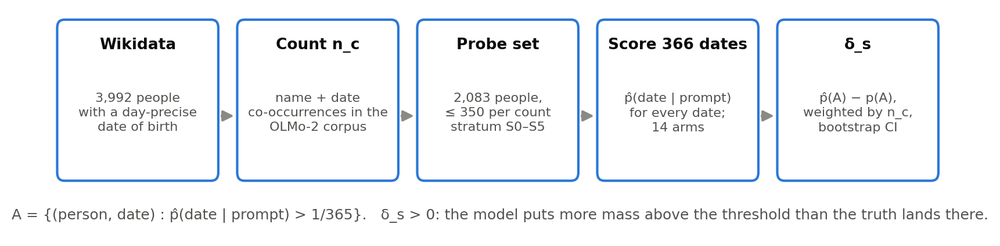
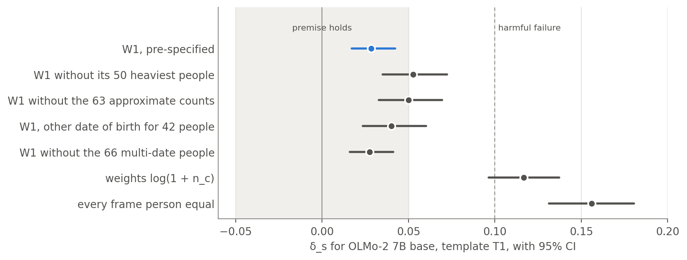
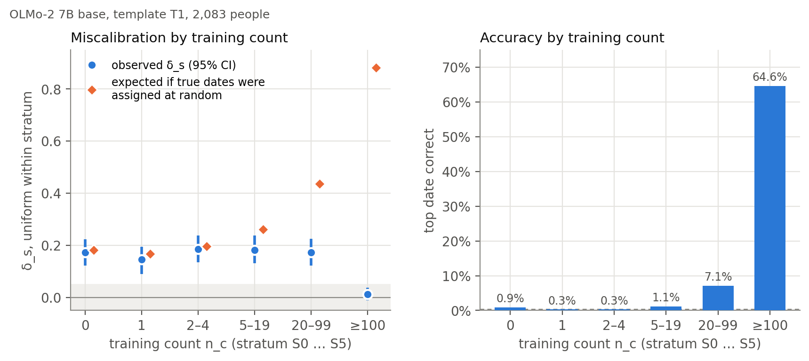
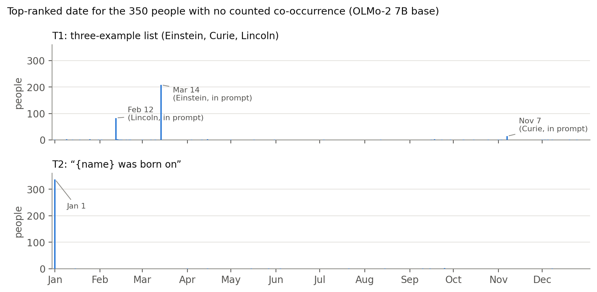
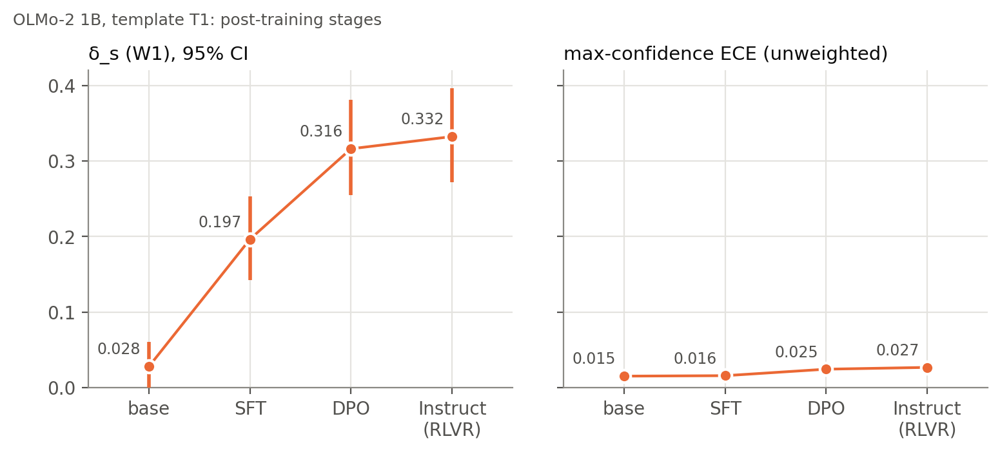

Is δ small? Measuring the premise of a hallucination lower bound on OLMo-2
On the birthday example of Kalai et al., OLMo-2 7B gives δ = +0.028, inside a ±0.05 band set in advance. The result is fragile, and the floor itself is vacuous on this frame.
Abstract
Kalai, Nachum, Vempala and Zhang prove that a pretrained language model errs on arbitrary facts at least about as often as such facts appear once in training, up to a slack term δ. The term compares the probability the model puts on answers above a threshold with how often the true answer is above it. They argue that pretraining keeps δ small, but do not measure it.
We measure its signed form on their birthday example. OLMo-2's corpus is public, so we weight each of 2,083 people by how often their name and birth date occur together in it. For the 7B base model δ = +0.028 (95% CI [0.017, 0.042]), inside a ±0.05 band set before the probe was built. For the 1B it is inconclusive.
The 7B run was added after part of its data had been seen, and weighting every frame person equally gives +0.156. On this frame the floor itself is vacuous.
The measurement

The frame is 3,992 Wikidata humans with a day-precise date of birth. For each we count matches of the name within 100 tokens of the date in the OLMo-2 stage-1 corpus, split the frame into six strata by that count, and score 350 per stratum. The model scores all 366 month–day strings, so no sampling is needed. The primary prompt T1 is:
Birthdays (month and day):
Albert Einstein: March 14
Marie Curie: November 7
Abraham Lincoln: February 12
{name}:
Results
| model | status | prompt | δs | 95% CI | accuracy |
|---|---|---|---|---|---|
| OLMo-2 1B base, fp32 | pre-specified | T1 | +0.028 | [−0.001, 0.061] | 7.2% |
| T2 | +0.077 | [0.021, 0.139] | |||
| T3 | +0.097 | [0.061, 0.137] | |||
| OLMo-2 7B base, Q8_0 | amendment | T1 | +0.028 | [0.017, 0.042] | 64.6% |
| T2 | −0.012 | [−0.029, 0.006] | |||
| T3 | +0.012 | [0.001, 0.024] |
Count-weighted δs. Accuracy: top-ranked date correct, people with nc ≥ 100, unweighted. The 1B's interval crosses +0.05, so its verdict is inconclusive.
How firm the 7B result is

Dropping the 50 heaviest people (37% of the weight), or the 63 whose counts the index could only approximate (35.5%), moves δs to about +0.05, with intervals that cross the band.
Where δ sits

For people with nc ≥ 100 the 7B is right 65% of the time and the unweighted δs is +0.012. In each stratum below 100 it is right at most 7% of the time and δs is +0.14 to +0.19.

Post-training

What it does not establish
- An empirical lower bound on hallucination. The singleton rate on this frame is 0.0056, so the floor's main term is about 10−4.
- The theorem's own setting: a Wikidata frame and a string-match proxy stand in for the training distribution, and the answers are 366 dates under fixed prompts, with no “I don't know”.
- An independent confirmation: the 7B run was added by amendment, at 8-bit precision, and its interval ends 0.008 inside the band.
The note is AI-assisted; its disclosure section says how. It has not been peer reviewed.